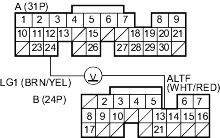
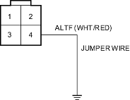
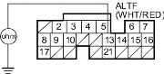

- Disconnect the ALT 4P connector.
- Turn the ignition switch ON (II).
- Measure voltage between ECM/PCM connector terminals A24 and B13.

Is there about 5 V?
YES |
- Go to step 4. |
NO |
- Go to step 14. |
- Turn the ignition switch OFF.
- Reconnect the ALT 4P connector.
- Start the engine. Hold the engine at 3,000 rpm (min-1) with no load (in Park or neutral) until the radiator fan comes on, then let it idle.
- Measure voltage between ECM/PCM connector terminals A24 and B13.
Does the voltage decrease when the headlights and rear window defogger are turned on?
YES |
- The ALT FR signal is OK. |
NO |
- Go to step 8. |

- Turn the ignition switch OFF.
- Disconnect the negative cable from the battery.
- Disconnect ECM/PCM connector B (24P).
- Disconnect the ALT 4P connector.
- Connect the ALT 4P connector terminal No. 4 and body ground with a jumper wire.

- Check for continuity between body ground and ECM/PCM connector terminal B13.

Is there continuity?
YES |
- Test the ALT (see step 1 on page 4-29). |
NO |
- Repair open in the wire between the ECM/PCM (B13) and the ALT. |
- Turn the ignition switch OFF.
- Disconnect the negative cable from the battery.
- Disconnect ECM/PCM connector B (24P).